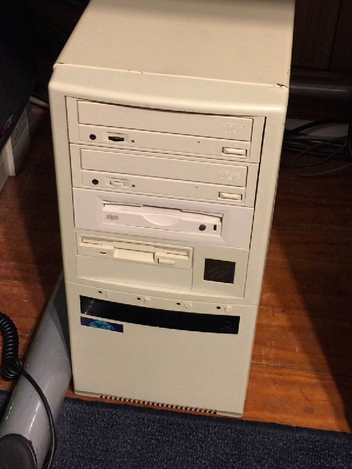

Computers
What is a computer?
"A computer is a machine that manipulates data according to a list of instructions." Right, so, the funny part about the eymology of the term 'computer' is that--exactly--it implies the manipulation of data, and more specifically, number-crunching.
In the brief window of time where advanced technologies were being developed, but computers did not exist in the same capacity as they do now, a computer was a person. A human computer would calculate countless mathematical operations, whose yield would somehow affect a process such as determining the trajectory of a missle. That's what I've heard, anyways.When you put it that way, a 'puter is, in fact, a mechanized computer, and an automated one as well (I'm still not sure there really is a difference).
Parts of a computer (peripherals)
A computer consists of many components, often called 'peripherals'.
You got your monitors, your keyboards, your mice, your speakers, all of which are hooked up to a black box, which--if you live in the post-Christian-Rapture era, beginning in 2012--will probably come with a warranty seal, stating that if you dare as much as unscrew the lid of the case off, your warranty will be voided and your CID (citizen ID), logged into the VABL (Vendor Avoidance Blacklist). 
Also, there's this thing. It looks like a TV, but it's pretty cool still.